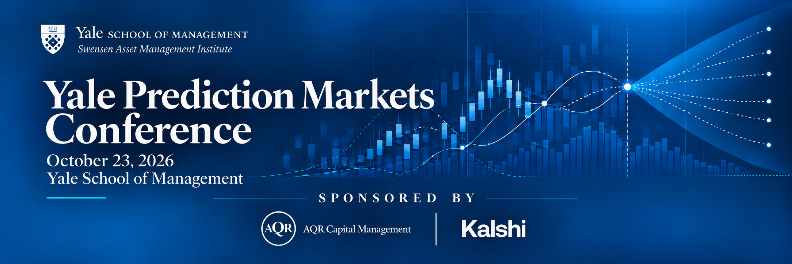
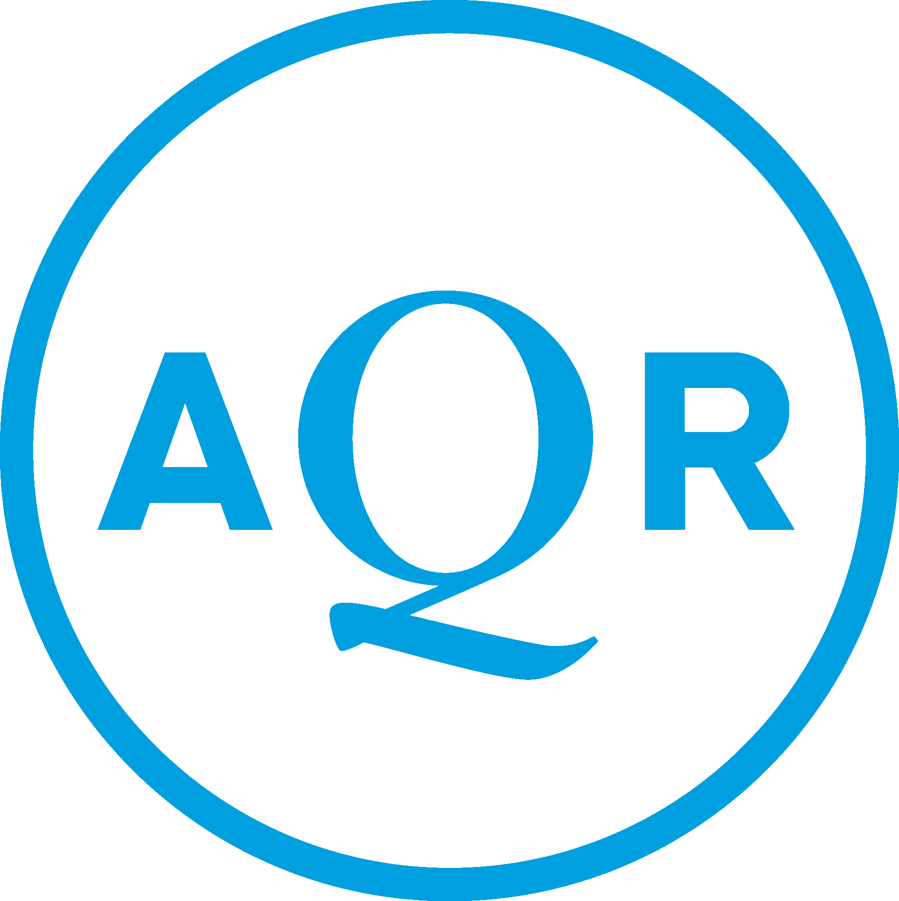

Join scholars, market makers, and policymakers for a day exploring how prediction markets are reshaping forecasting, finance, and decision-making. This event is by invitation only.
Interested in attending? →The Yale Prediction Markets Conference brings together researchers, traders, exchange operators, and policymakers to examine how prediction markets are moving from the margins of finance into the mainstream of forecasting and decision-making.
This year's sessions present new academic research on prediction markets: what drives their forecasting accuracy — the wisdom of the crowd or a small set of informed traders — and how the information (and noise) they generate spills over into traditional financial markets. Later sessions turn to how AI agents trade on these platforms, what prediction markets reveal about macroeconomic expectations, and who ultimately wins and loses. Presenters join from Yale, London Business School, University of Pennsylvania, HEC Montréal, Georgia State University, and the Federal Reserve Board, with a keynote from Kalshi.
The conference is organized by the following faculty.
Moskowitz's research covers financial markets and investments, including asset pricing, investor behavior, and market efficiency. He is a Research Associate at the NBER and a Principal at AQR Capital Management, and received the American Finance Association's Fischer Black Prize in 2007.
Jensen's research focuses on empirical asset pricing, investor expectations, and behavioral finance, often using large datasets and machine learning. His recent work examines prediction markets and the role of informed traders in shaping market prices.
Gómez-Cram's research focuses on asset pricing, investments, and macro-finance. His recent work examines prediction markets as a source of real-time information about corporate earnings, government debt, and monetary policy.
Featured research presentations from leading scholars in prediction markets.
Diercks is Special Adviser to the Board at the Federal Reserve Board of Governors, where his research spans asset pricing, macroeconomics, and monetary policy. He is a co-author of "Kalshi and the Rise of Macro Markets" and "The Treasury Tantrum of 2023," and his work has appeared in the Journal of Political Economy and the Review of Financial Studies.
Goldstein chairs Wharton's Finance Department and directs its Initiative on Financial Policy and Regulation. His research examines financial fragility and crises and the feedback effects between firms and financial markets, and he has advised institutions including the Federal Reserve, the Bank for International Settlements, and the IMF.
Grégoire's research examines the intersection of finance and technology, with a focus on prediction markets, market microstructure, and algorithmic trading. His recent work studies trading and the distribution of gains and losses in prediction markets, including evidence from Polymarket.
Kagan leads research at Kalshi, where she helped build the exchange's market design and contract-writing functions. She previously worked on the macro trading team at Bridgewater Associates and as an AI strategist at Hebbia.
Shi's research spans investments, financial institutions, behavioral finance, and empirical asset pricing, with particular expertise in hedge funds and mutual funds, including portfolio disclosure and liquidity.
Tentative schedule. A few presenters and discussants are still being confirmed.

AQR Capital ManagementThis conference is by invitation only. If you'd like to attend, email us and we'll follow up with details.
Request an Invitation →Or reach us directly at swenseninstitute@yale.edu.